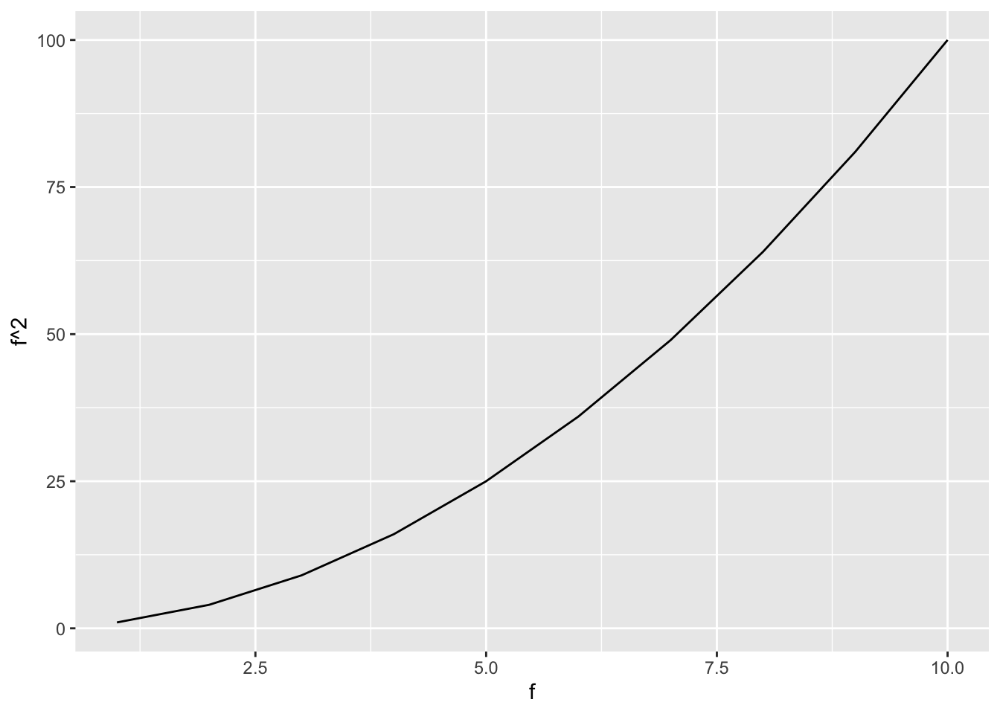
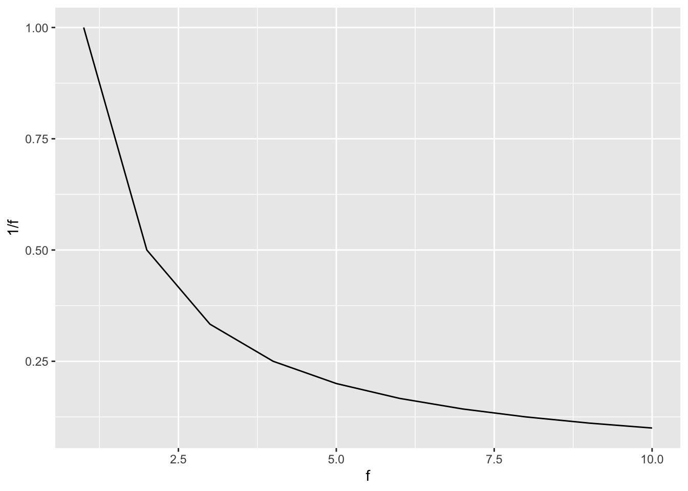
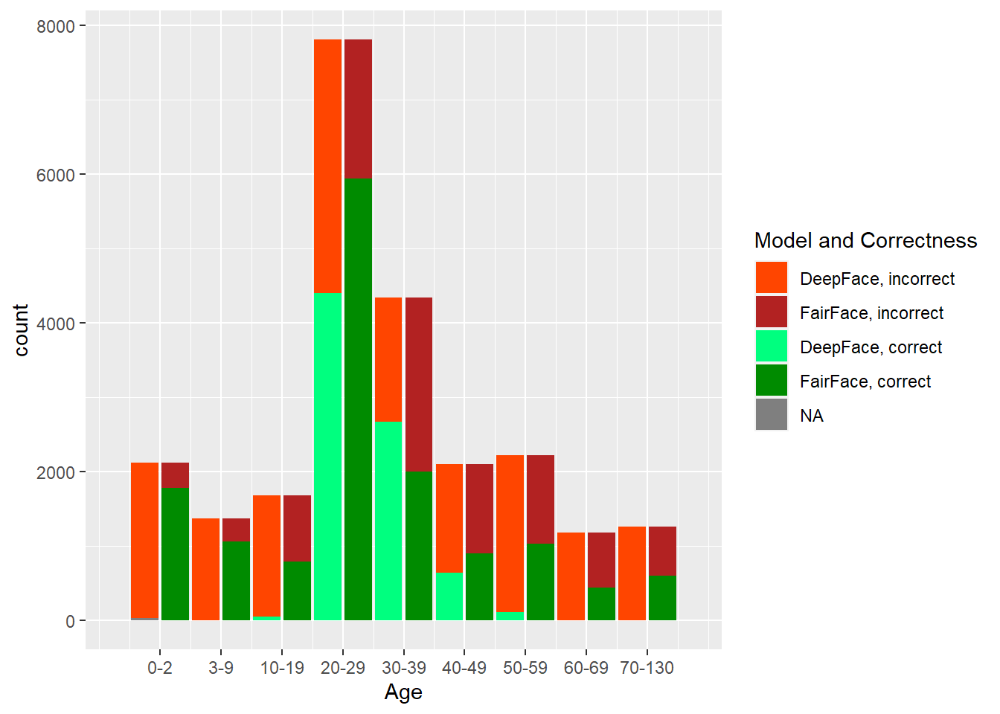
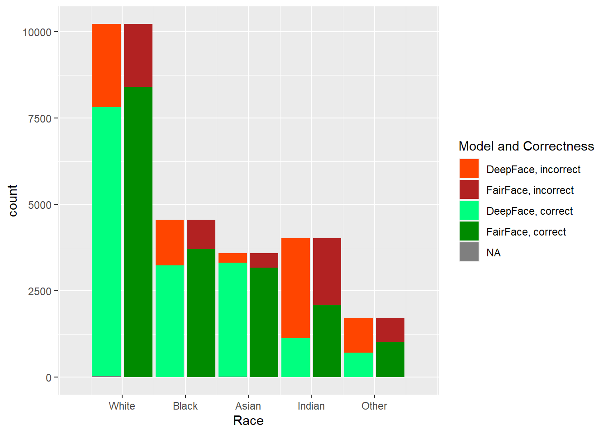

[1] 1 2 3 4 5 6 7 8 9 104 Results


From the report requirements
Describe the results of your analysis using visualizations, descriptive statistics, tables and similar.
Don’t focus too much on the implications in this section – that’s what the next section is for. Just present the numbers/graphs.
4.1 Model Output
The two models, DeepFace and FairFace, were run on the dataset described previously. In Figure 4.2, one can see the results of the predictions done by each model, by each factor that was considered: age, gender, and race. Note that the histogram distributions match the correct (source dataset) distributions, so we can see exactly the difference between what was provided and what was predicted, along with how well each model did on each category within each factor.



4.2 Model Performance
For each category and model, we calculate the F1 score and accuracy, as described in section 3. The results are summarized in Table 4.1.
| Category | F1 Score | Accuracy | F1 Score | Accuracy |
|---|---|---|---|---|
| Age | ||||
| Age: 0-2 | 0.8959757 | 0.9172888 | NA | 0.5000000 |
| Age: 3-9 | 0.7176035 | 0.8772778 | NA | 0.5000000 |
| Age: 10-19 | 0.5052498 | 0.7211461 | 0.0478601 | 0.5055825 |
| Age: 20-29 | 0.7332922 | 0.8050592 | 0.5054326 | 0.6217793 |
| Age: 30-39 | 0.4670003 | 0.6741504 | 0.3786318 | 0.6275447 |
| Age: 40-49 | 0.3943970 | 0.6786302 | 0.2276278 | 0.5866155 |
| Age: 50-59 | 0.4633983 | 0.7049843 | 0.0801673 | 0.5137145 |
| Age: 60-69 | 0.3739425 | 0.6708204 | 0.0016129 | 0.4991769 |
| Age: 70-130 | 0.6270661 | 0.7383514 | NA | 0.5000000 |
| Race | ||||
| Race: White | 0.8610399 | 0.8788455 | 0.8095461 | 0.8365916 |
| Race: Black | 0.8684858 | 0.8997692 | 0.7964994 | 0.8462797 |
| Race: Asian | 0.8948932 | 0.9338128 | 0.7038975 | 0.9005150 |
| Race: Indian | 0.6402458 | 0.7488102 | 0.4092481 | 0.6310597 |
| Race: Other | 0.3087473 | 0.7105889 | 0.2389021 | 0.6283106 |
| Gender | ||||
| Gender | 0.9429153 | 0.9453080 | 0.8197702 | 0.8402892 |
4.3 Hypothesis Testing
[1] 0.1487843
[1] 0.1891129
[1] 0.1670816
[1] 0.07094847
[1] 0.4240727[1] 0.088001
[1] 0.05688325
[1] 0.06978674
[1] 0.3238735
[1] 0.1802755
[1] 0.08725417
[1] 0.09231599
[1] 0.04908306
[1] 0.05252676[1] 0.5219899
[1] 0.4780101[1] 0.2408847
[1] 0.1479233
[1] 0.06111504
[1] 0.1743649
[1] 0.375712[1] 0.02062113
[1] 0.3987029
[1] 0.4047312
[1] 0.1467177
[1] 0.02681578
[1] 0.002411342[1] 0.6166798
[1] 0.3833202[1] 0.1448259
[1] 0.1652484
[1] 0.1030675
[1] 0.2014445
[1] 0.3854136[1] 0.07629405
[1] 0.06645635
[1] 0.06064505
[1] 0.3480138
[1] 0.1762899
[1] 0.1023619
[1] 0.0930638
[1] 0.04906397
[1] 0.02781122[1] 0.5202358
[1] 0.4797642[1] "p.0-2" "p.3-9" "p.10-19" "p.20-29" "p.30-39" "p.40-49" "p.50-59"
[8] "p.60-69" "p.70-130"| x | |
|---|---|
| p.Male | 0.6942686 |
| p.Female | 0.7058243 |
| x | |
|---|---|
| p.Male | 0 |
| p.Female | 0 |
| x | |
|---|---|
| p.Asian | 0.5064370 |
| p.Black | 0.0000503 |
| p.Indian | 0.0000000 |
| p.Other | 0.0000000 |
| p.White | 0.0000000 |
| x | |
|---|---|
| p.Asian | 0 |
| p.Black | 0 |
| p.Indian | 0 |
| p.Other | 0 |
| p.White | 0 |
\[ \frac{\sqrt{n_M}\cdot(\bar{p}_M-p_S)}{\sqrt{p_S\cdot(1-P_S)}} \]
Female
0.4780101 Asian
0.1487843 Asian Black Indian Other White
0.14878433 0.18911294 0.16708157 0.07094847 0.42407269 Asian Black Indian Other White
0.1448259 0.1652484 0.1030675 0.2014445 0.3854136 Asian Black Indian Other White
0.24088471 0.14792334 0.06111504 0.17436494 0.37571197 Male Female
0.5219899 0.4780101 Male Female
0.5202358 0.4797642 Male Female
0.6166798 0.3833202